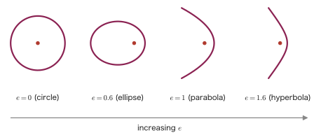

Chapter 8Conic Sections — Parabolas, Ellipses, and Hyperbolas
Ever since junior high school, we have been familiar with the parabola as the graph of the quadratic function $y=ax^2$. But the parabola we study in this chapter shows a different face. “The set of points equidistant from one point (the focus) and one line (the directrix)”—if we start from this definition, not only does the familiar graph of $y=ax^2$ come out properly, but by changing the same idea only slightly we can understand, in a unified way, even curves of seemingly quite different shapes: the ellipse (the sum of the distances is constant) and the hyperbola (the difference of the distances is constant).
These curves do not exist only inside mathematics. The orbit of a planet revolving around the Sun is an ellipse (Kepler's first law); the reflectors of parabolic antennas and car headlights make use of properties of the parabola; and the hyperbola is used in navigation systems that determine the position of ships and aircraft (the principle that the difference of the distances from several locations is constant). In this chapter we derive the parabola, the ellipse, and the hyperbola, one by one, from their definitions using coordinates, and in the end we arrive at the viewpoint of the eccentricity, a single number with which we can look at these three curves (and the circle) as one connected family.
- The definition of the parabola (equidistant from the focus $F$ and the directrix $\ell$), and the derivation of the standard forms $y^2=4px$ (the $x$-axis is the axis) and $x^2=4py$ (the $y$-axis is the axis)
- The definition of the ellipse (the sum of the distances from the two foci is constant), the derivation of the standard form $\dfrac{x^2}{a^2}+\dfrac{y^2}{b^2}=1$, and the focus formula $c=\sqrt{a^2-b^2}$
- The definition of the hyperbola (the difference of the distances from the two foci is constant), the derivation of the standard form $\dfrac{x^2}{a^2}-\dfrac{y^2}{b^2}=1$, and the focus formula $c=\sqrt{a^2+b^2}$
- (Advanced) The asymptotes $y=\pm\dfrac{b}{a}x$ of the hyperbola, and a glimpse of the idea of limits
- (Advanced) The eccentricity $e=\dfrac{c}{a}$: the unified understanding that $e=0$ is a circle, $0\lt e\lt1$ is an ellipse, $e=1$ is a parabola, and $e\gt1$ is a hyperbola
Source notes: Yasuhide Mochizuki, Mathematics Notes: High School Mathematics (handwritten lecture notes, in Japanese), pp. 33–35.
8.1 Parabolas
The parabola we learned about in junior high school was the graph of the quadratic function $y=ax^2$ ($a\neq0$). Here we redefine the parabola as “the set of points equidistant from a given point (the focus) and a given line (the directrix).” This may look like a detour, but this definition gives us a unified way of looking at things in terms of “distance,” one that connects naturally not only with the parabola but also with the ellipse and the hyperbola, which we study afterward.
Definition 8.1: Parabola
In the plane, the locus of points $P$ whose distances from a fixed point $F$ and from a fixed line $\ell$ not passing through $F$ are equal is called a parabola. The point $F$ is called the focus, and the line $\ell$ is called the directrix.
Let us use coordinates to check how the familiar graph of $y=ax^2$ comes out of the condition “the distances are equal” alone. First we consider the case where the focus lies on the $x$-axis (the case where the axis of the parabola coincides with the $x$-axis).
8.1.1 Parabolas whose axis is the x-axis
Derivation: The standard form $y^2=4px$
Suppose $p\neq0$. Let us find the equation of the parabola whose focus is the point $F(p,0)$ and whose directrix is the line $\ell:x=-p$. Let $P(x,y)$ be a point on the curve, and let $H$ be the foot of the perpendicular dropped from $P$ to the directrix $\ell$. Since the directrix is the vertical line $x=-p$, to find the distance from $P(x,y)$ to $\ell$ we may leave the $y$-coordinate unchanged; thus $H(-p,y)$ and $PH=|x-(-p)|=|x+p|$.
By Definition 8.1, for $P$ to lie on the parabola it suffices that $PH=PF$ holds. By the formula for the distance between two points, $PF=\sqrt{(x-p)^2+y^2}$, so we obtain the equation
$$ \sqrt{(x-p)^2+y^2} = |x+p| $$The left side contains a radical and the right side an absolute value, which is awkward to handle, so we square both sides. Both sides are nonnegative (since one is a distance and the other an absolute value), so squaring yields an equivalent equation (for $A,B\ge0$, $A=B\iff A^2=B^2$). Noting also that $|x+p|^2=(x+p)^2$, we obtain
$$ (x-p)^2+y^2=(x+p)^2 $$Here the left side's $(x-p)^2=x^2-2px+p^2$ and the right side's $(x+p)^2=x^2+2px+p^2$ both contain $x^2$ and $p^2$ in common. So we subtract $x^2+p^2$ from both sides to cancel them, and get
$$ -2px+y^2=2px \quad\Longrightarrow\quad y^2=2px+2px=4px $$(The computation is this: moving $-2px$ to the right side turns it into $+2px$, which combines with the original $+2px$ to make $4px$.) Hence
$$ \begin{equation} y^2=4px \label{eq:8-parabola-x} \end{equation} $$is the equation of the parabola with focus $F(p,0)$ and directrix $x=-p$.
Terminology: The standard form of a parabola
The forms $y^2=4px$, as in Eq. \eqref{eq:8-parabola-x}, and $x^2=4py$, which we derive in the next subsection, are called the standard forms of the parabola.
Intuition: The sign of $p$ and the direction in which the parabola opens
Figure 8.1 is drawn for the case where $p$ is positive; in this case the parabola opens to the right (the direction of $x\gt0$), the side on which the focus lies. If $p$ is negative, then for $y^2=4px\ge0$ to hold in Eq. \eqref{eq:8-parabola-x} we must have $x\le0$, and the parabola opens to the left. In either case, the directrix $x=-p$ lies on the opposite side of the origin from the focus $F(p,0)$, and the origin (the vertex of the parabola) is exactly the midpoint between the focus and the directrix.
Application: Parabolic antennas and reflectors
A parabola has the property that “light or radio waves arriving parallel to the axis are all reflected and gathered at the focus” (conversely, light emitted from the focus is all reflected and travels parallel to the axis). This property is used in many everyday devices: parabolic antennas for satellite broadcasting (which gather radio waves at the receiver at the focus), the reflectors of flashlights and car headlights (a light source is placed at the focus and the light is projected as parallel rays), and solar furnaces that concentrate sunlight at a single point.
8.1.2 Parabolas whose axis is the y-axis
Let us now apply the same idea to the case where the focus lies on the $y$-axis. Suppose $p\neq0$, and let the focus be the point $F(0,p)$ and the directrix the line $\ell:y=-p$.
Derivation: The standard form $x^2=4py$
The distance from a point $P(x,y)$ on the curve to the directrix $\ell:y=-p$ may be found while leaving the $x$-coordinate unchanged, so $H(x,-p)$ and $PH=|y-(-p)|=|y+p|$. On the other hand, $PF=\sqrt{x^2+(y-p)^2}$, so from $PH=PF$ we get
$$ |y+p| = \sqrt{x^2+(y-p)^2} $$Squaring both sides (this is an equivalent transformation, for the same reason as before), we get
$$ (y+p)^2 = x^2+(y-p)^2 $$Here the left side is $(y+p)^2=y^2+2py+p^2$ and the right side's $(y-p)^2=y^2-2py+p^2$; since $y^2,p^2$ are common to both sides, we subtract $y^2+p^2$ from both sides and rearrange to get
$$ 2py=x^2-2py \quad\Longrightarrow\quad x^2=2py+2py=4py $$That is,
$$ \begin{equation} x^2=4py \label{eq:8-parabola-y} \end{equation} $$is obtained.
Intuition: The relationship to the familiar $y=ax^2$
Dividing Eq. \eqref{eq:8-parabola-y} by $p\neq0$ and rewriting it in the form $y=\dfrac{1}{4p}x^2$, we see that it coincides exactly with the graph $y=ax^2$ of the quadratic function that has been familiar since junior high school ($a=\dfrac{1}{4p}$, that is, $p=\dfrac{1}{4a}$). For example, for $y=x^2$ ($a=1$) we have $p=\dfrac14$, so the focus is $\left(0,\dfrac14\right)$ and the directrix is $y=-\dfrac14$. In other words, the parabola that you drew in junior high school as “just a graph” actually had a hidden focus, located only $\dfrac14$ away from the vertex.
Example 8.1: Finding the equation of a parabola from its focus and directrix
Find the equation of the parabola whose focus is $(2,0)$ and whose directrix is $x=-2$.
Solution. From the focus $(p,0)=(2,0)$ we get $p=2$. Substituting this into $y^2=4px$ in Eq. \eqref{eq:8-parabola-x}, we obtain
$$ y^2=4\times2\times x=8x $$This is the required equation. (Check: the directrix is $x=-p=-2$, which indeed agrees with the condition stated in the problem.)
Example 8.2: Finding the focus and directrix from the equation of a parabola
Find the coordinates of the focus and the equation of the directrix of the parabola $x^2=-12y$.
Solution. Comparing with $x^2=4py$ in Eq. \eqref{eq:8-parabola-y}, we get $4p=-12$, so $p=-3$. Since $p$ is negative, by the same reasoning that we confirmed in Section 8.1.1, “Intuition: The sign of $p$ and the direction in which the parabola opens” (for $x^2=4py$ as well, the sign of $p$ determines whether the parabola opens upward or downward), this parabola opens downward (in the direction of $y\lt0$). The focus is $F(0,p)=(0,-3)$ and the directrix is $y=-p=3$.
8.2 Ellipses
The parabola was defined by the condition of being equidistant from “one point and one line.” The ellipse that we consider next is instead defined by the condition that the sum of the distances from “two fixed points” is constant. A familiar example is the orbit of a planet, which is an ellipse with the Sun at one of its foci.
8.2.1 Definition of the ellipse
Definition 8.2: Ellipse
Given two fixed points $F,F'$ in the plane, the locus of points $P$ for which the sum of the distances from the two points is constant is called an ellipse. Each of the points $F,F'$ is called a focus (plural: foci).
Let the sum of the distances from the two fixed points (the foci) $F,F'$ be $2a$ ($a\gt0$); that is, suppose that $F'P+FP=2a$. When the three points $P,F,F'$ form a triangle (that is, they are not on a single line), the property that the sum of two sides of a triangle is greater than the remaining side (the triangle inequality) gives $F'P+FP\gt FF'$. Letting the distance between the points $F,F'$ be $2c$ ($c\ge0$), this means
$$ 2a\gt FF'=|2c| $$(excluding the extreme case in which $P$ lies on the segment $FF'$). Hence we may assume that $a\gt c\gt0$. (When $c=0$, that is, $F=F'$, the foci coincide at a single point and the ellipse becomes a circle. We will come back to this in Section 8.2.3.)
Terminology: Major axis, minor axis, and center
Let $A,A'$ be the points where the ellipse meets the axis of symmetry passing through the two foci; the segment $AA'$ is called the major axis. Let $B,B'$ be the points where the ellipse meets the other axis of symmetry, which is perpendicular to the major axis; the segment $BB'$ is called the minor axis. The intersection of the major axis and the minor axis is called the center of the ellipse.
8.2.2 Derivation of the standard form
Derivation: The standard form $\dfrac{x^2}{a^2}+\dfrac{y^2}{b^2}=1$ (first half)
Choose the coordinate axes so that the center is at the origin and the major axis lies along the $x$-axis. Let the foci be $F(c,0),F'(-c,0)$. We now find the locus of the points $P(x,y)$ for which the sum of the distances from the two fixed points is $2a$. By Definition 8.2,
$$ \sqrt{(x+c)^2+y^2}+\sqrt{(x-c)^2+y^2}=2a $$Having two radicals makes the expression hard to handle, so we first move one of them to the other side to get
$$ \sqrt{(x+c)^2+y^2} = 2a-\sqrt{(x-c)^2+y^2} $$and then square both sides to eliminate the radicals one at a time. The left side becomes $(x+c)^2+y^2$, and we expand the right side in the form $(A-B)^2=A^2-2AB+B^2$, which gives
$$ (x+c)^2+y^2 = 4a^2-4a\sqrt{(x-c)^2+y^2}+(x-c)^2+y^2 $$The $y^2$ terms on the two sides cancel. Using also $(x+c)^2-(x-c)^2=4cx$ (which is immediate on expanding: $(x^2+2cx+c^2)-(x^2-2cx+c^2)=4cx$) and rearranging, we obtain
$$ 4cx+4a\sqrt{(x-c)^2+y^2} = 4a^2 $$(We moved the $-4a\sqrt{\cdots}$ that was on the right side of the original equation to the left side, and the $(x-c)^2+y^2$ canceled between the two sides.) Dividing both sides by $4$ and arranging so that only the radical term remains on the left side, we get
$$ a\sqrt{(x-c)^2+y^2} = a^2-cx $$Squaring both sides once more to eliminate the remaining radical, we obtain
$$ a^2\{(x-c)^2+y^2\} = a^4-2a^2cx+c^2x^2 $$Expanding the left side gives $a^2x^2-2a^2cx+a^2c^2+a^2y^2$. Canceling the term $-2a^2cx$ common to both sides and rearranging, the equation becomes
$$ \therefore\ (a^2-c^2)x^2+a^2y^2=(a^2-c^2)a^2 $$This is the relation we obtain.
Caution: $c=\sqrt{a^2-b^2}$ (how to find the coordinates of the foci of an ellipse)
Since we confirmed above that $a\gt c\gt0$, we have $a^2-c^2\gt0$, so $\sqrt{a^2-c^2}$ makes sense as a positive real number. We therefore let $b=\sqrt{a^2-c^2}$ ($b^2=a^2-c^2$). Solving this relation for $c$ gives
$$ \begin{equation} c=\sqrt{a^2-b^2} \label{eq:8-ellipse-focus} \end{equation} $$In other words, as long as we know $a,b$, which are determined by the lengths of the major and minor axes, the focus is found to be $F(\sqrt{a^2-b^2},0)$.
Derivation: The standard form $\dfrac{x^2}{a^2}+\dfrac{y^2}{b^2}=1$ (second half: substituting $b$ to finish)
Substituting $b^2=a^2-c^2$ into the equation above gives $b^2x^2+a^2y^2=a^2b^2$. Dividing both sides by $a^2b^2$ ($\neq0$), we obtain
$$ \begin{equation} \frac{x^2}{a^2}+\frac{y^2}{b^2}=1 \label{eq:8-ellipse-std} \end{equation} $$This is the standard form of the ellipse. The length of the major axis is $AA'=2a$, and the length of the minor axis is $BB'=2b$.
Example 8.3: Finding the equation of an ellipse from the lengths of its major and minor axes
Find the equation in standard form and the coordinates of the foci of the ellipse whose major axis has length $10$ and whose minor axis has length $6$.
Solution. From the length of the major axis, $2a=10$, we get $a=5$. From the length of the minor axis, $2b=6$, we get $b=3$. By Eq. \eqref{eq:8-ellipse-std}, the standard form is
$$ \frac{x^2}{25}+\frac{y^2}{9}=1 $$For the foci, Eq. \eqref{eq:8-ellipse-focus} gives $c=\sqrt{a^2-b^2}=\sqrt{25-9}=\sqrt{16}=4$, so the foci are $(\pm4,0)$.
Example 8.4: Finding the sum of distances from the definition of the ellipse
For a point $P$ on the ellipse $\dfrac{x^2}{25}+\dfrac{y^2}{9}=1$, find the sum $PF+PF'$ of the distances from that point to the two foci $F,F'$.
Solution. Comparing with the standard form $\dfrac{x^2}{a^2}+\dfrac{y^2}{b^2}=1$, we see that $a^2=25$, that is, $a=5$. By Definition 8.2 (and the equation at the starting point of the derivation), $PF+PF'=2a$ always holds for any point $P$ on the ellipse, so
$$ PF+PF'=2a=2\times5=10 $$Notice that we do not need to find the specific coordinates of $P$: the answer comes out simply by going back to the definition.
Application: Kepler's first law
The astronomer Kepler discovered that the planets revolve around the Sun along elliptical orbits with the Sun at one focus (Kepler's first law, 1609). The orbits of the planets in the solar system have eccentricities quite close to 0 (Section 8.2.3), so they are ellipses close to circles, but some comets have orbits that are elongated, flattened ellipses with eccentricity close to 1.
8.2.3 Advanced: Eccentricity
As a quantity that expresses how “flattened” an ellipse is, we define the eccentricity $e=\dfrac{c}{a}$. Since $0\lt c\lt a$, the eccentricity of an ellipse lies in the range $0\lt e\lt1$. The closer $e$ is to $0$, the closer the shape is to a circle; the closer it is to $1$, the more elongated and flattened the shape becomes (the limiting case $c=0$, $e=0$ is literally a circle).
It is known that, in terms of the eccentricity, the distance from the focus $F(c,0)$ to a point $P(x,y)$ on the ellipse can be written as a neat linear expression. From the standard form Eq. \eqref{eq:8-ellipse-std} we have $y^2=b^2\left(1-\dfrac{x^2}{a^2}\right)$, so
$$ PF^2=(x-c)^2+y^2=(x-c)^2+b^2-\frac{b^2}{a^2}x^2 $$Substituting $b^2=a^2-c^2$ here gives
$$ PF^2=(x-c)^2+(a^2-c^2)-\frac{a^2-c^2}{a^2}x^2 $$Let us expand the right side. We have $(x-c)^2=x^2-2cx+c^2$, and the last term can be split as $-\dfrac{a^2-c^2}{a^2}x^2=-x^2+\dfrac{c^2}{a^2}x^2$, so
$$ PF^2=\underbrace{x^2-2cx+c^2}_{(x-c)^2}+a^2-c^2\underbrace{-x^2+\frac{c^2}{a^2}x^2}_{-\frac{a^2-c^2}{a^2}x^2} $$Here $x^2$ and $-x^2$ cancel, and $+c^2$ and $-c^2$ also cancel, so all that remains is
$$ PF^2=\frac{c^2}{a^2}x^2-2cx+a^2 $$Finally, we arrange this into the form of a perfect square. Letting $e=\dfrac{c}{a}$, we can write $\dfrac{c^2}{a^2}x^2=(ex)^2$ and $2cx=2a\cdot\dfrac{c}{a}x=2a\cdot ex$, so
$$ PF^2=(ex)^2-2a(ex)+a^2=(a-ex)^2 $$This is a perfect square. (Expanding $(a-ex)^2=a^2-2a\cdot ex+(ex)^2$ confirms that it has exactly the same three terms.) For $-a\le x\le a$ we have $a-ex\ge a-e\cdot a=a(1-e)\gt0$ (because $e\lt1$), so we can remove the square root and obtain
$$ PF=a-ex $$Furthermore, letting $d=\dfrac{a}{e}-x$ be the distance to the line $x=\dfrac{a}{e}\left(=\dfrac{a^2}{c}\right)$ (this, too, is called a directrix), we obtain the constant ratio
$$ \frac{PF}{d}=\frac{a-ex}{\frac{a}{e}-x}=\frac{e(a-ex)}{a-ex}=e $$(we multiplied the numerator and the denominator by $e$ and canceled). In other words, the points of the ellipse can also be characterized as the set of points whose “distance to the focus” and “distance to the directrix” have a ratio that is always $e$. The definition of the parabola, Definition 8.1 ($PF=PH$, that is, a ratio of $1$), is the special case of this relation with $e=1$. The ellipse corresponds to $e\lt1$, and the hyperbola, which we study next, corresponds to $e\gt1$—the eccentricity $e$ is a unifying yardstick for understanding the conic sections as one connected family (we will summarize this with a figure in Section 8.3.4).
Example 8.5: Finding the distance to a focus using the eccentricity and $PF=a-ex$
Find the eccentricity $e$ of the ellipse $\dfrac{x^2}{25}+\dfrac{y^2}{16}=1$. Also, for a point $P$ on this ellipse with $x=3$, find the distance $PF$ to the focus $F(c,0)$ ($c\gt0$).
Solution. Comparing with the standard form, we have $a^2=25,b^2=16$, that is, $a=5,b=4$. By Eq. \eqref{eq:8-ellipse-focus}, $c=\sqrt{a^2-b^2}=\sqrt{25-16}=\sqrt9=3$, so the eccentricity is
$$ e=\frac{c}{a}=\frac{3}{5}=0.6 $$Substituting $a=5,e=0.6,x=3$ into $PF=a-ex$, which we derived earlier in this section, we get
$$ PF=a-ex=5-0.6\times3=5-1.8=3.2 $$(Check: when $x=3$, $y^2=b^2\left(1-\dfrac{x^2}{a^2}\right)=16\left(1-\dfrac{9}{25}\right)=16\times\dfrac{16}{25}=\dfrac{256}{25}$, so $y=\dfrac{16}{5}=3.2$. On the other hand, since $c=3$, the points $F(3,0)$ and $P(3,3.2)$ have the same $x$-coordinate, and $PF=|y|=3.2$. This indeed agrees with the result from $PF=a-ex$.)
8.3 Hyperbolas
Whereas the ellipse was defined by the condition that the “sum of the distances is constant,” the hyperbola is defined by the condition that the “difference of the distances” is constant—the same condition with only the sign reversed. From this difference in sign alone there arises a curve completely unlike the ellipse—one with two branches that go off without limit from the origin.
8.3.1 Definition of the hyperbola
Definition 8.3: Hyperbola
In the plane, the locus of points $P$ for which the difference of the distances from two fixed points $F,F'$ is constant is called a hyperbola. The points $F,F'$ are called the foci.
We find the hyperbola whose foci are the two fixed points $F(c,0),F'(-c,0)$ and for which the difference of the distances from these two points is $2a$. Since a “difference” has a direction, we have $PF-PF'=\pm2a$ (double sign), depending on whether $P$ lies on the branch nearer $F$ or on the branch nearer $F'$. Also, by the triangle inequality, the difference of two sides of a triangle is less than the remaining side, so $|PF-PF'|\lt FF'$, that is, $2a\lt2c$, that is, $c\gt a\gt0$ (note that the direction of this inequality is the reverse of $a\gt c$ for the ellipse).
Application: Navigation that fixes position from differences in distance
The definition of the hyperbola (the difference of the distances from two points is constant) translates directly into a principle of practical position fixing. If we receive radio signals sent simultaneously from two fixed transmitting stations and measure the difference in their arrival times (which is proportional to the difference in distances), we learn that the receiving point lies “on a certain hyperbola with the two transmitting stations as its foci.” A navigation method that determines one's own position by combining three or more stations and finding the intersection of several hyperbolas (LORAN and hyperbolic navigation) was in fact used in the twentieth century for the navigation of ships and aircraft.
8.3.2 Derivation of the standard form
Derivation: The standard form $\dfrac{x^2}{a^2}-\dfrac{y^2}{b^2}=1$ (first half)
By the definition, $\sqrt{(x-c)^2+y^2}-\sqrt{(x+c)^2+y^2}=\pm2a$. As in the case of the ellipse, we first move one of the radicals to the other side and then square, eliminating the radicals one at a time. In the case $+2a$, squaring $\sqrt{(x-c)^2+y^2}=2a+\sqrt{(x+c)^2+y^2}$ gives
$$ (x-c)^2+y^2 = 4a^2+4a\sqrt{(x+c)^2+y^2}+(x+c)^2+y^2 $$The $y^2$ on both sides cancel, and using $(x-c)^2-(x+c)^2=-4cx$ (which is just the ellipse case's $(x+c)^2-(x-c)^2=4cx$ with the sign reversed), we get
$$ -4cx-4a^2 = 4a\sqrt{(x+c)^2+y^2} $$Dividing both sides by $4$ gives $-cx-a^2=a\sqrt{(x+c)^2+y^2}$, that is, $a\sqrt{(x+c)^2+y^2}=-(a^2+cx)$. The right side can be negative (since the left side $a\sqrt{\cdots}$ is at least $0$, we in fact have $a^2+cx\le0$ in that range), but since we are going to square once more anyway, the sign does not matter. (The original notes start from the $-2a$ branch ($PF-PF'=-2a$), and the corresponding line there has the opposite sign: $a\sqrt{(x+c)^2+y^2}=a^2+cx$. The standard-form equation we finally obtain is the same whichever branch we start from (we will confirm this below), so even if the sign looks reversed when only this one line is compared, it is not a calculation error.) Squaring gives
$$ a^2\{(x+c)^2+y^2\} = (a^2+cx)^2 $$Expanding the left side gives $a^2x^2+2a^2cx+a^2c^2+a^2y^2$, and expanding the right side gives $a^4+2a^2cx+c^2x^2$. Canceling the term $2a^2cx$ common to both sides and rearranging, we obtain
$$ \therefore\ (c^2-a^2)x^2-a^2y^2=(c^2-a^2)a^2 $$(Even if we start from the $-2a$ case, writing $\sqrt{(x+c)^2+y^2}=2a+\sqrt{(x-c)^2+y^2}$ and repeating the same calculation, we arrive at the same equation, with only the signs of $x,c$ reversed. That is, for either branch the equation of the hyperbola is one and the same.)
Caution: $c=\sqrt{a^2+b^2}$ (how to find the coordinates of the foci of a hyperbola)
Since $c\gt a\gt0$, we have $c^2-a^2\gt0$, so we can let $b=\sqrt{c^2-a^2}$ ($b^2=c^2-a^2$). Solving this for $c$, we obtain
$$ \begin{equation} c=\sqrt{a^2+b^2} \label{eq:8-hyperbola-focus} \end{equation} $$(The only change from Eq. \eqref{eq:8-ellipse-focus} for the ellipse is that the sign inside the radical has become plus.)
Derivation: The standard form $\dfrac{x^2}{a^2}-\dfrac{y^2}{b^2}=1$ (second half: substituting $b$ to finish)
Substituting $b^2=c^2-a^2$ into the previous equation gives $b^2x^2-a^2y^2=a^2b^2$, and dividing both sides by $a^2b^2$ ($\neq0$) gives
$$ \begin{equation} \frac{x^2}{a^2}-\frac{y^2}{b^2}=1 \label{eq:8-hyperbola-std} \end{equation} $$This is the standard form of the hyperbola.
Example 8.6: Finding the foci of a hyperbola
Find the coordinates of the foci of the hyperbola $\dfrac{x^2}{16}-\dfrac{y^2}{9}=1$.
Solution. Comparing with the standard form, we have $a^2=16,b^2=9$, that is, $a=4,b=3$. By Eq. \eqref{eq:8-hyperbola-focus}, $c=\sqrt{a^2+b^2}=\sqrt{16+9}=\sqrt{25}=5$. Hence the foci are $(\pm5,0)$.
8.3.3 Advanced: Asymptotes
Although it is not stated explicitly in the original notes, a hyperbola has a striking feature that an ellipse lacks—asymptotes (lines that the curve approaches without limit). Solving the standard form Eq. \eqref{eq:8-hyperbola-std} for $y$, we get
$$ \frac{y^2}{b^2}=\frac{x^2}{a^2}-1 \quad\Longrightarrow\quad y=\pm b\sqrt{\frac{x^2}{a^2}-1}=\pm\frac{b}{a}x\sqrt{1-\frac{a^2}{x^2}} $$(The last step rewrites $\sqrt{\dfrac{x^2}{a^2}-1}=\dfrac{x}{a}\sqrt{1-\dfrac{a^2}{x^2}}$ on the branch where $x\gt0$.) Now let $x\to\infty$. Since $\dfrac{a^2}{x^2}\to0$, we have $\sqrt{1-\dfrac{a^2}{x^2}}\to1$, and we obtain
$$ \begin{equation} y\ \longrightarrow\ \pm\frac{b}{a}x\qquad(x\to\infty) \label{eq:8-hyperbola-asymptote} \end{equation} $$Thus the curve approaches these lines. In other words, the two lines $y=\dfrac{b}{a}x$ and $y=-\dfrac{b}{a}x$ act as “guide lines” that the hyperbola gets closer and closer to as it moves far away from the origin. These are the asymptotes. (The idea of the limit $\lim$ will be studied in earnest later, in university mathematics, as the foundation of calculus.)
Example 8.7: Finding the asymptotes of a hyperbola
Find the equations of the asymptotes of the hyperbola $\dfrac{x^2}{16}-\dfrac{y^2}{9}=1$. Also describe the rough shape of this hyperbola.
Solution. Since $a=4,b=3$ (the same as in Example 8.6), by Eq. \eqref{eq:8-hyperbola-asymptote} the asymptotes are
$$ y=\pm\frac{3}{4}x $$The vertices are $(\pm4,0)$ (setting $y=0$ in the standard form gives $x=\pm a=\pm4$), and the foci are $(\pm5,0)$ by Example 8.6. The hyperbola consists of two branches, symmetric about the origin, that open to the left and to the right from these two vertices, respectively, and approach the two asymptotes $y=\pm\dfrac34x$ without limit as $x\to\pm\infty$ (Figure 8.4).
8.3.4 Advanced: Understanding the conics in a unified way through eccentricity
Let us carry out for the hyperbola the same computation as for the ellipse. For a point $P(x,y)$ on the branch nearer the focus $F(c,0)$ ($x\ge a$), the standard form, Eq. \eqref{eq:8-hyperbola-std}, gives $y^2=b^2\left(\dfrac{x^2}{a^2}-1\right)$, so
$$ PF^2=(x-c)^2+y^2=(x-c)^2+\frac{b^2}{a^2}x^2-b^2 $$Substituting $b^2=c^2-a^2$ here, we obtain
$$ PF^2=(x-c)^2+\frac{c^2-a^2}{a^2}x^2-(c^2-a^2) $$As in the case of the ellipse, we expand the right side. Since $(x-c)^2=x^2-2cx+c^2$ and $\dfrac{c^2-a^2}{a^2}x^2=\dfrac{c^2}{a^2}x^2-x^2$, the terms $x^2$ and $-x^2$ cancel, and $c^2$ and $-c^2$ also cancel, leaving
$$ PF^2=\frac{c^2}{a^2}x^2-2cx+a^2 $$(note that this has exactly the same form, including the signs, as the expression $\dfrac{c^2}{a^2}x^2-2cx+a^2$ for the ellipse). If we let $e=\dfrac{c}{a}$, then $\dfrac{c^2}{a^2}x^2=(ex)^2$ and $2cx=2a(ex)$, so
$$ PF^2=(ex)^2-2a(ex)+a^2=(ex-a)^2 $$which is a perfect square. For the ellipse it was $(a-ex)^2$, and here it is $(ex-a)^2$; only the sign of the quantity being squared is reversed, and once it is squared the two give the same expression ($(a-ex)^2=(ex-a)^2$). The difference in sign shows up only when we remove the square root: on this branch, $x\ge a$ and $e=\dfrac{c}{a}\gt1$, so
$$ ex-a\ge ea-a=a(e-1)\gt0 $$(multiplying both sides of $x\ge a$ by the positive number $e$ gives $ex\ge ea$, and since $e\gt1$ we have $a(e-1)\gt0$). Therefore $ex-a$ is positive, so we can remove the square root directly and obtain
$$ PF=ex-a\qquad\left(e=\frac{c}{a}\right) $$(compared with $PF=a-ex$ for the ellipse, the sign of the expression before squaring is reversed). Since $c\gt a\gt0$, the eccentricity of a hyperbola is $e=\dfrac{c}{a}\gt1$. If we use the directrix $x=\dfrac{a}{e}$, which has exactly the same form as in the case of the ellipse, the ratio of the distances is
$$ \frac{PF}{d}=\frac{ex-a}{x-\frac{a}{e}}=e $$and so it is constant here as well. To summarize, the ratio $e=PF/d$ of the distances from the focus and from the directrix behaves as follows.
- $e=0$: circle (the limiting case $c=0$)
- $0\lt e\lt1$: ellipse
- $e=1$: parabola (Definition 8.1 itself, $PF=PH$)
- $e\gt1$: hyperbola
We see that the value of the eccentricity $e$ alone is enough to arrange the four kinds of curves into a single continuous family (Figure 8.5). Because all of them appear as cross sections when a cone is cut by a plane, they are also called conic sections. If you picture the shape changing continuously from a circle to an ellipse, a parabola, and then a hyperbola as the cutting angle is varied, this unified viewpoint should make even more sense.

Example 8.8: Finding the distance to a focus using the eccentricity and $PF=ex-a$
Find the eccentricity $e$ of the hyperbola $\dfrac{x^2}{16}-\dfrac{y^2}{9}=1$. Also, for the point $P$ on the branch nearer the focus $F(c,0)$ ($c\gt0$) at which $x=5$, find the distance $PF$.
Solution. Comparing with the standard form, we have $a^2=16,b^2=9$, that is, $a=4,b=3$. By Eq. \eqref{eq:8-hyperbola-focus}, $c=\sqrt{a^2+b^2}=\sqrt{16+9}=\sqrt{25}=5$, so the eccentricity is
$$ e=\frac{c}{a}=\frac{5}{4}=1.25 $$(since $e\gt1$, this is indeed the eccentricity of a hyperbola). Substituting $e=1.25,x=5,a=4$ into $PF=ex-a$ gives
$$ PF=ex-a=1.25\times5-4=6.25-4=2.25 $$(Check: when $x=5$, $y^2=b^2\left(\dfrac{x^2}{a^2}-1\right)=9\left(\dfrac{25}{16}-1\right)=9\times\dfrac{9}{16}=\dfrac{81}{16}$, so $y=\dfrac{9}{4}=2.25$. On the other hand, since $c=5$, $F(5,0)$ and $P(5,2.25)$ have the same $x$-coordinate, so $PF=|y|=2.25$. This indeed agrees with the result from $PF=ex-a$.)
8.4 Summary and Exercises
8.4.1 Summary
- Parabola: the locus of points equidistant from a fixed point $F$ (the focus) and a fixed line $\ell$ (the directrix). Standard forms: $y^2=4px$ (the axis is the $x$-axis, the focus is $F(p,0)$, and the directrix is $x=-p$) or $x^2=4py$ (the axis is the $y$-axis, the focus is $F(0,p)$, and the directrix is $y=-p$).
- Ellipse: the locus of points for which the sum of the distances from two fixed points $F,F'$ (the foci) is constant ($=2a$). Standard form $\dfrac{x^2}{a^2}+\dfrac{y^2}{b^2}=1$ ($a\gt b\gt0$); the foci are $(\pm c,0)$ with $c=\sqrt{a^2-b^2}$. The major axis has length $2a$ and the minor axis has length $2b$.
- Hyperbola: the locus of points for which the difference of the distances from two fixed points $F,F'$ (the foci) is constant ($=\pm2a$). Standard form $\dfrac{x^2}{a^2}-\dfrac{y^2}{b^2}=1$; the foci are $(\pm c,0)$ with $c=\sqrt{a^2+b^2}$, and the asymptotes are $y=\pm\dfrac{b}{a}x$.
- The derivations for the ellipse and the hyperbola both follow the same procedure: “move one radical to the other side, square, and repeat this until the radicals are eliminated completely.” The only difference between the definitions, “sum of distances” versus “difference of distances,” shows up as the difference in the final sign ($+y^2$ or $-y^2$).
- Using the eccentricity $e=\dfrac{c}{a}$ (the ratio of the distances from a focus and from the directrix), we can understand the four kinds of curves in a unified way: $e=0$: circle, $0\lt e\lt1$: ellipse, $e=1$: parabola, $e\gt1$: hyperbola.
8.4.2 Exercises
Exercise 8.1: Finding the equation of a parabola
Find the equation of the parabola whose vertex is the origin and whose focus is $(0,3)$. Also find the equation of its directrix.
Hint: Since the focus lies on the $y$-axis, the equation has the form $x^2=4py$ of Section 8.1.2 of the main text.
Exercise 8.2: Finding the basic quantities of an ellipse
For the ellipse $\dfrac{x^2}{16}+\dfrac{y^2}{7}=1$, find the coordinates of the foci and the lengths of the major and minor axes.
Hint: Compare with the standard form to find $a,b$, and use Eq. \eqref{eq:8-ellipse-focus}.
Exercise 8.3: Finding the difference of distances from the definition of a hyperbola
For a point $P$ on the hyperbola $\dfrac{x^2}{9}-\dfrac{y^2}{16}=1$, find the difference $|PF-PF'|$ of the distances from that point to the two foci.
Hint: The idea is the same as in Example 8.4. You can get the answer by returning to the definition, without finding any coordinates.
Exercise 8.4: Reproducing the derivation of the standard form of an ellipse by yourself
Following the procedure of Section 8.2.2 of the main text, show by your own computation, without omitting any intermediate steps, that the locus of points $P(x,y)$ for which the sum of the distances from the two fixed points $F(c,0),F'(-c,0)$ is $2a$ ($a\gt c\gt0$) is $\dfrac{x^2}{a^2}+\dfrac{y^2}{b^2}=1$, where $b=\sqrt{a^2-c^2}$.
Hint: It is a two-stage procedure: move one radical to the other side $\to$ square $\to$ simplify $\to$ rearrange once more into an equation in which only the radical remains on one side $\to$ square.
Exercise 8.5: Explaining where the difference in signs comes from
The signs of the denominators in the standard form of an ellipse are $+,+$ ($\dfrac{x^2}{a^2}+\dfrac{y^2}{b^2}=1$), whereas for a hyperbola they are $+,-$ ($\dfrac{x^2}{a^2}-\dfrac{y^2}{b^2}=1$). Explain where in the two derivations this difference in signs arises.
Hint: Trace how the difference between the definitions, “sum of distances” versus “difference of distances,” affects the sign of $(x+c)^2-(x-c)^2$.
Exercise 8.6: Intersection of a parabola and a line
Find the coordinates of the points of intersection of the parabola $y^2=4px$ ($p\neq0$) and the line $y=x$, in terms of $p$.
Hint: Substitute $y=x$ into $y^2=4px$ and solve the equation in $x$.
8.4.3 References
- Yasuhide Mochizuki, Mathematics Notes: High School Mathematics (handwritten lecture notes, in Japanese). The source of this chapter.
- R. Courant and H. Robbins (revised by I. Stewart), What Is Mathematics? An Elementary Approach to Ideas and Methods, 2nd ed., Oxford University Press, 1996.